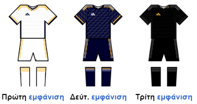

Η Ρεάλ Μαδρίτης είναι ισπανικό αθλητικό σωματείο που εδρεύει στην Ισπανία και ιδρύθηκε ως ποδοσφαιρικός σύλλογος το 1902. Η "Βασίλισσα της Ευρώπης", όπως αποκαλείται, κατέχει 97 επίσημους τίτλους στις επτά διοργανώσεις που έχει τη δυνατότητα να συμμετέχει σήμερα (Πρωτάθλημα Ισπανίας [35], Κύπελλο Ισπανίας [20], Σούπερ Καπ Ισπανίας [13], Ουέφα Τσάμπιονς Λιγκ [14], Σούπερ Καπ Ευρώπης [5], Ουέφα Γιουρόπα Λιγκ [2] και Παγκόσμιο Κύπελλο Συλλόγων [8]). Κατέχει το ρεκόρ των 35 τίτλων στη Λα Λίγα ή Πριμέρα Ντιβισιόν, αριθμό που καμία άλλη ομάδα δεν έχει καταφέρει να ξεπεράσει εντός Ισπανίας. Ο σύλλογος επίσης διατηρεί δεύτερη ποδοσφαιρική ομάδα, τη Ρεάλ Μαδρίτης Καστίγια.
Έδρα της ομάδας είναι το στάδιο Σαντιάγο Μπερναμπέου στη Μαδρίτη. Ιδιαιτερότητα της Ρεάλ είναι πως, σε αντίθεση με τα περισσότερα ποδοσφαιρικά σωματεία, ανήκει και διοικείται αποκλειστικά από τα μέλη της (socios), από το 1902. Στις 23 Δεκεμβρίου 2000, η Ρεάλ τιμήθηκε από τη FIFA ως «ο μεγαλύτερος σύλλογος του 20ού αιώνα». Στις διεθνείς διοργανώσεις έχει κατακτήσει 14 Τσάμπιονς Λιγκ, αριθμό ρεκόρ, 2 Κύπελλα ΟΥΕΦΑ, 5 Ευρωπαϊκά Σούπερ Καπ και 8 Παγκόσμια Κύπελλα Συλλόγων και είναι η καλύτερη ομάδα που έχει υπάρξει ποτέ στο άθλημα του ποδοσφαίρου.
